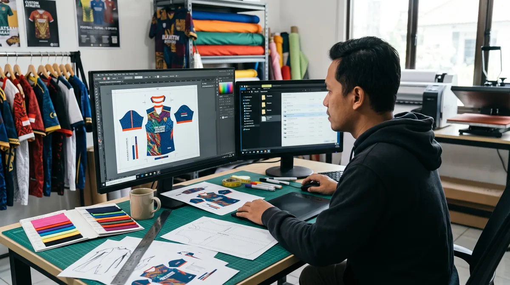

Memahami alur produksi membantu tim menyiapkan data pesanan dan menetapkan tenggat yang realistis. Artikel ini membahas aspek yang perlu diperiksa agar keputusan Anda lebih tepat, baik untuk seragam komunitas, tim olahraga, sekolah, maupun kebutuhan acara.
Dalam memilih layanan jersey printing, sebaiknya pertimbangkan bukan hanya tampilan desain, tetapi juga fungsi bahan, ketepatan ukuran, dan kesiapan data pesanan. Untuk gambaran menyeluruh, baca panduan printing jersey Bandung.
Brief dan finalisasi desain
Proses dimulai dari pemilihan bahan, model, jumlah, ukuran, serta kebutuhan personalisasi. Mockup perlu disetujui sebelum pekerjaan berpindah ke tahap pencetakan.
Untuk memperjelas keputusan sebelum produksi, lihat juga persiapan file desain jersey. Informasi tersebut membantu menyesuaikan pilihan dengan kebutuhan tim dan kesiapan pesanan.
Cetak, transfer, dan potong
Untuk sublimasi, desain dicetak pada media transfer lalu dipindahkan ke kain dengan panas. Setelah itu panel disiapkan mengikuti pola dan ukuran yang telah ditetapkan.

Jika ingin memeriksa detail yang berkaitan, baca panduan ukuran jersey custom. Informasi tersebut membantu menyesuaikan pilihan dengan kebutuhan tim dan kesiapan pesanan.
Jahit, inspeksi, dan pengemasan
Panel disatukan, kemudian dicek jahitan, posisi grafis, ukuran, dan kelengkapan nama atau nomor. Pengemasan berdasarkan daftar pemesan membantu mengurangi kekeliruan distribusi.
Sebagai langkah lanjutan yang praktis, gunakan panduan cara menilai kualitas jersey printing. Informasi tersebut membantu menyesuaikan pilihan dengan kebutuhan tim dan kesiapan pesanan.
Tahap pra-produksi
Brief dan konsultasi
Tim menyampaikan jenis olahraga, jumlah, model, bahan, target waktu, serta referensi desain. Informasi lengkap mempercepat penentuan spesifikasi.
Mockup dan persetujuan
Desain depan, belakang, dan lengan ditinjau bersama. Nama, nomor, warna, logo, serta posisi sponsor perlu disetujui sebelum produksi.
Persiapan pola
Pola tiap ukuran disiapkan dengan mempertimbangkan model kerah, potongan badan, dan kebutuhan panel.
Tahap produksi utama
Cetak sublimasi
File diproses pada bahan yang kompatibel dengan metode sublimasi. Kontrol proses membantu menjaga konsistensi warna antarpanel.
Potong dan jahit
Panel dipotong sesuai pola lalu dijahit. Kualitas jahitan, sambungan motif, dan kenyamanan area kerah diperiksa.
Pemasangan detail
Elemen tambahan seperti label atau emblem dipasang sesuai spesifikasi yang disetujui.
Pemeriksaan sebelum pengiriman
Kontrol kualitas
Periksa jumlah, ukuran, nama, nomor, cacat cetak, jahitan, dan kebersihan produk.
Pengemasan dan pengiriman
Kelompokkan sesuai ukuran atau nama agar distribusi tim mudah. Sisihkan waktu penerimaan sebelum hari pertandingan.
Langkah praktis sebelum menentukan pilihan
Gunakan panduan ini sebagai titik awal, lalu sesuaikan dengan aktivitas, anggaran, kebutuhan desain, dan jumlah anggota tim. Jika terdapat spesifikasi khusus, komunikasikan sejak awal agar solusi yang ditawarkan tidak hanya terlihat menarik di gambar tetapi juga sesuai saat digunakan.
Untuk kebutuhan produksi di Bandung, pelajari juga panduan printing jersey Bandung yang menjelaskan pilihan bahan, teknik sublimasi, serta alur pemesanan. Anda juga dapat mengenal layanan jersey printing dari Zipzip dan mendiskusikan detail proyek secara langsung.
Titik pemeriksaan kualitas di setiap tahap
Pada tahap brief, cocokkan jumlah unit, ukuran, desain, dan target tanggal. Pada tahap praproduksi, periksa kembali warna, tata letak grafis, serta file personalisasi sebelum bahan masuk proses cetak.
Setelah pencetakan, kontrol kualitas sebaiknya mencakup keseragaman warna, ketajaman detail, dan posisi elemen utama. Pada tahap jahit, periksa ukuran, bentuk kerah, sambungan kain, serta kerapian finishing.
Sebelum pengiriman, cocokkan jumlah barang dengan daftar pesanan dan pisahkan unit yang perlu diperbaiki. Dokumentasi hasil pemeriksaan membantu koordinator tim membagikan jersey dengan lebih tertib.
Untuk membandingkan pilihan secara menyeluruh, baca panduan printing jersey Bandung dan lihat layanan jersey printing Zipzip.
Tahap pertama: brief yang bisa dieksekusi
Produksi yang rapi dimulai dari data lengkap, bukan dari mesin cetak. Vendor perlu mengetahui jumlah, rentang ukuran, jenis bahan, model kerah, desain, logo, nama dan nomor, serta tanggal penggunaan. Jika masih ada data yang berubah, tandai secara eksplisit. Untuk pesanan tim, satu koordinator sebaiknya bertanggung jawab atas persetujuan. Brief yang jelas mengurangi pekerjaan ulang pada tahap berikutnya dan membantu menyusun jadwal yang realistis.
Pemeriksaan file sebelum cetak
Desain diperiksa terhadap template panel dan spesifikasi bahan. Operator perlu memastikan ukuran file, keterbacaan teks, posisi logo, serta area potong dan jahitan. Data personalisasi juga dicocokkan dengan daftar pemain. Jika ada warna khusus atau motif yang menyambung antarpanel, tahap ini menjadi titik penting untuk meminta proof. File yang lolos pemeriksaan kemudian ditetapkan sebagai versi produksi agar tidak tercampur dengan revisi sebelumnya.
Pencetakan transfer dan pengaturan warna
Pada proses sublimasi, desain biasanya dicetak ke media transfer sebelum dipindahkan ke polyester dengan panas dan tekanan terkontrol. Pengaturan mesin perlu disesuaikan dengan bahan, tinta, dan media yang digunakan. Perubahan kecil pada parameter atau jenis kain dapat memengaruhi tampilan warna. Karena itu, contoh cetak dan kontrol konsistensi penting terutama untuk pesanan banyak potong. Hasil yang tampak bagus di satu panel perlu dibandingkan dengan panel lain agar seragam tim terlihat senada.
Pemotongan panel dan penataan motif
Setelah bahan siap, panel dipotong sesuai pola ukuran. Ketelitian penting karena potongan yang berbeda akan memengaruhi jatuhnya baju dan pertemuan motif di sambungan. Pada desain dengan garis diagonal atau blok warna, operator perlu memahami area yang harus sejajar. Penomoran panel atau pengelompokan per ukuran dapat membantu mengurangi salah pasang. Tahap ini sering tidak terlihat oleh pembeli, tetapi sangat menentukan kerapian jersey setelah dijahit.
Penjahitan dan pemeriksaan konstruksi
Panel yang sudah dipotong dijahit menjadi jersey lengkap, termasuk pemasangan kerah dan penyelesaian ujung lengan. Jahitan perlu cukup kuat untuk aktivitas olahraga namun tetap nyaman ketika badan bergerak. Periksa sambungan bahu, sisi, ketiak, dan bagian bawah; benang yang menggantung atau jahitan tidak rata sebaiknya diperbaiki sebelum pengemasan. Jika ada beberapa model potongan, pemeriksaan harus mengikuti ukuran dan desain yang disetujui, bukan sekadar jumlah total barang.
Kontrol kualitas bukan hanya melihat warna
Pemeriksaan akhir sebaiknya mencakup kecocokan nama, nomor, ukuran, jumlah, posisi logo, ketajaman cetak, kerapian jahitan, dan kebersihan produk. Untuk pesanan tim, buat daftar per anggota agar tidak tertukar. Cek pula apakah variasi warna antarpotong masih dalam toleransi yang disepakati. Dokumentasi foto dapat membantu proses serah terima, tetapi tetap perlu dibandingkan dengan daftar pesanan asli. Panduan menilai kualitas jersey printing dapat dipakai sebagai acuan pemeriksaan.
Mengapa waktu produksi perlu diberi ruang
Lama pengerjaan bergantung pada kesiapan desain, jumlah pesanan, antrean produksi, ketersediaan bahan, kompleksitas jahitan, dan pengiriman. Revisi setelah file disetujui dapat menggeser jadwal. Karena itu, hindari menyamakan waktu cetak mesin dengan keseluruhan waktu produksi. Untuk kebutuhan turnamen, hitung mundur dari tanggal penggunaan dan sisakan waktu untuk pemeriksaan serta distribusi ke anggota tim. Jangan menjanjikan tanggal pasti sebelum vendor mengonfirmasi kapasitas.
Dokumen serah terima untuk pesanan kelompok
Sebelum paket diterima, cocokkan daftar nama, nomor, ukuran, dan jumlah dengan barang yang dikemas. Kelompokkan jersey berdasarkan anggota atau ukuran untuk mempermudah pembagian. Simpan bukti persetujuan desain dan rincian pesanan jika diperlukan pengecekan. Jika ada ketidaksesuaian, catat dengan foto dan sampaikan segera melalui jalur komunikasi yang disepakati. Prosedur sederhana ini membuat proses setelah produksi lebih tertib dan membantu vendor menindaklanjuti masalah secara spesifik.
Pertanyaan yang sering muncul
Tahap pertama: brief yang bisa dieksekusi?
Produksi yang rapi dimulai dari data lengkap, bukan dari mesin cetak. Vendor perlu mengetahui jumlah, rentang ukuran, jenis bahan, model kerah, desain, logo, nama dan nomor, serta tanggal penggunaan.
Pemeriksaan file sebelum cetak?
Desain diperiksa terhadap template panel dan spesifikasi bahan. Operator perlu memastikan ukuran file, keterbacaan teks, posisi logo, serta area potong dan jahitan.
Pencetakan transfer dan pengaturan warna?
Pada proses sublimasi, desain biasanya dicetak ke media transfer sebelum dipindahkan ke polyester dengan panas dan tekanan terkontrol. Pengaturan mesin perlu disesuaikan dengan bahan, tinta, dan media yang digunakan.
Artikel terkait yang dapat membantu
- Cara Menyiapkan File Desain Jersey Printing agar Hasil Rapi
- Ciri-Ciri Jersey Printing Berkualitas yang Perlu Diperiksa
- Bikin Jersey Cepat Bandung
Masih ada pertanyaan tentang spesifikasi atau kebutuhan tim? Hubungi Zipzip untuk membahas opsi yang sesuai dengan desain dan jadwal Anda.
Bacaan lanjutan untuk perencanaan jersey
Tahap berikutnya bisa dipelajari melalui panduan yang saling melengkapi berikut.